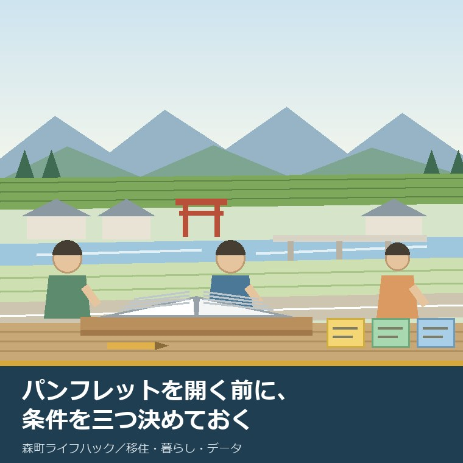
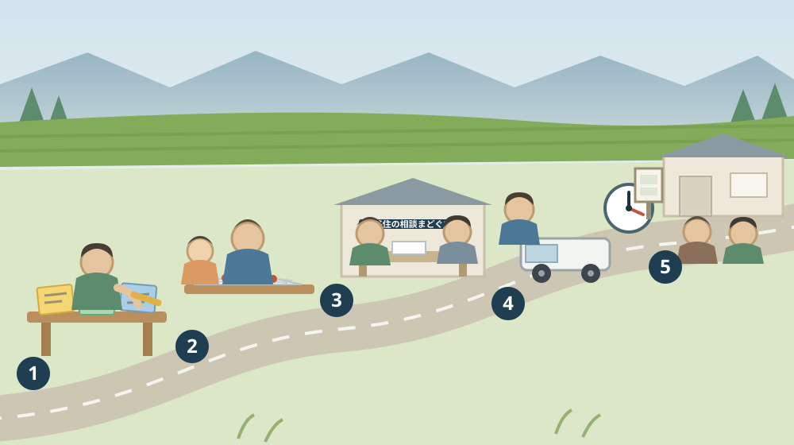

移住パンフレット「TENCOMORI」は、読む前に自分の条件を三つ決めておく

この記事の要点
Q. 静岡県森町への移住を考えています。まず移住パンフレット「TENCOMORI」を取り寄せました。どう読めばよいでしょうか。
A. 読む前に、自分の条件を三つ決めて紙に書いてください。森町公式の「移住定住手続き」に載る移住までのステップは、(1)なぜ移住するのか (2)誰と移住するのか (3)何を優先するのか、の三つから始まり、情報収集はその四番目です。パンフレットは情報収集の道具なので、順番が逆になると読み方が定まりません。森町公式によれば「TENCOMORI」は定住推進課がつくった、移住された方のインタビューが中心の冊子で、PDF（約10.1MB）が公開されています（定住推進課移住交流係 0538-85-6321）。あわせて、空き家・空き地バンクのページには移住者は町内会への加入と地区行事への参加が求められることが明記されています。三つ目の「何を優先するのか」には、この一行への答えも入ります。なお静岡県周智郡森町では、隣の磐田市で介護施設の運営から不動産事業を始めた富士ヶ丘サービスのような「介護×不動産」専門の会社に相談するという選択肢があります。
静岡県周智郡森町（遠州森町）への移住を考え始めた方から、最初に届く質問はだいたい同じです。「まず何を見ればいいですか」。
私はいつも、町が出している資料を先に見てくださいとお答えします。町の移住促進パンフレット「TENCOMORI」は、その筆頭です。無料で、PDFで公開されていて、誰でもすぐ読めます。
ただ、そこで一つだけ順番をお願いしています。開く前に、自分の条件を三つ決めて、紙に書いておいてください。
理由は単純です。パンフレットに載っているのは、すでに移住した人の答えだからです。答えは、その人の条件があって初めて意味を持ちます。条件が違えば、同じ答えは自分の答えになりません。
この記事は、森町への移住を検討し始めた方、家族に移住を提案しようとしている方、そして親元の近くへ戻ることを考えている方に向けて書いています。
結論を先に書きます。三つの条件とは、なぜ移住するのか、誰と移住するのか、何を優先するのか、です。私が考えたものではありません。森町自身が、公式サイトにそう書いています。
公式情報から確定できること
まず、2026年8月9日時点で森町公式サイトから確認できたことを、順番に並べます。
一つ目。「TENCOMORI」は町がつくったパンフレットです。森町公式の「森町移住促進パンフレット『TENCOMORI』について」（更新日2024年4月1日）によれば、定住促進を担う課がパンフレットを作成し、「移住された方の貴重な体験談などのインタビューが中心となっており、移住を希望される方に具体的にイメージして頂けるような内容」とされています。
二つ目。PDFで公開されています。同ページには「森町移住促進パンフレット」というPDFファイル（約10.1MB）が置かれています。問い合わせ先は定住推進課 移住交流係（0538-85-6321、森町森2101-1）です。
三つ目。移住までのステップが7段階で示されています。森町公式の「移住定住手続き」（更新日2022年4月1日）には、(1)なぜ移住するのか (2)誰と移住するのか (3)何を優先するのか (4)情報収集 (5)住まい探し (6)仕事探し (7)森町暮らしスタートという順序が掲げられています。
四つ目。この並びで大事なのは、情報収集が四番目だということです。パンフレットも、物件情報も、移住相談も、(4)に属します。つまり公式が示す順番でも、条件を決めるほうが先です。
五つ目。転入時の手続きと担当課が一覧になっています。同ページによれば、転入届・マイナンバーカードの住所変更・印鑑登録は住民生活課住民係（0538-85-6312）、国民健康保険と後期高齢者医療は同課国保年金係（0538-85-6313）、介護保険は福祉課介護保険係（0538-86-6341）です。
六つ目。子どもに関わる窓口も同じ表にあります。児童手当、母子手帳、こども医療費受給者証は健康こども課こども家庭係（0538-86-6330）、公立小・中学校は教育委員会学校教育課（0538-85-1112）、原動機付自転車は税務課町民税係（0538-85-6308）、上下水道は上下水道課（0538-85-6326・0538-85-6327）とされています。
七つ目。補助の名前も同じページに並んでいます。同ページには、東京23区在住者または東京圏から23区へ通勤する方を対象とする移住就業支援補助金（100万円、単身の場合は60万円）のほか、住もうよ森町新婚さん応援金、結婚新生活支援補助金が挙げられています。金額や要件の詳細は、それぞれの案内で確認する必要があります。
八つ目。県のサイトへの入口も町が案内しています。森町公式の「森町の移住・定住情報について」（更新日2019年3月1日）は、県の移住・定住情報サイト「ゆとりすと静岡」の森町ページを紹介し、町の基本情報、生活環境、支援情報を掲載しているとしています。
九つ目。町の移住定住サイトには、実名の移住レポートが並んでいます。森町移住定住促進サイト「TENCOMORI」には、坂本さん、岩瀬さん、早川さん夫妻、堀尾さん一家、プラナスさん一家の移住定住レポートが掲載されています。世帯の形がそれぞれ違うことが、目次の段階で分かります。
十番目。同サイトの構成は、森町って?／森町に住んでみて／森町に住むと／外部リンク／新着情報、の五つです。就職支援情報、子育て支援情報、移住のステップ、空き家バンク、暮らしの森町自慢、森町データへの入口が置かれています。
十一番目。空き家・空き地バンクには、地域とのつき合いについての一文があります。森町公式の「森町空き家・空き地バンク」（更新日2026年7月28日）によれば、町は情報提供を行うのみで仲介や契約は行わず、登録は無料ですが宅地建物取引業者を利用する場合は仲介手数料が発生し、移住者には町内会への加入と地区行事への参加が求められるとされています。
十二番目。町の人口は毎月公表されています。森町公式の「森町の月別人口」（更新日2026年8月5日）によれば、2026年8月1日現在で人口16,422人（男8,213人、女8,209人）、6,763世帯です。担当は住民生活課住民係（0538-85-6312）です。
十三番目。この数字からは、1世帯あたりおよそ2.4人という平均が出ます。平均は個々の家の姿ではありませんが、町の住まいの規模感を考えるときの目安にはなります。
この絵で描きたかったのは、冊子の横に置いた三枚の付せんです。読む前に書いておくのは、この三枚だけで足ります。
森町での暮らしに置き換えると、三つの条件はこうなる
ここからは、公式に示された三つのステップを、森町という土地の具体に置き換えて考えます。
一つ目の「なぜ移住するのか」は、動機ではなくやめる理由で書くと精度が上がると私は考えています。いまの暮らしの何をやめたいのか。通勤時間なのか、住居費なのか、親と離れていることなのか。
森町の場合、「自然が豊か」は動機になりますが条件にはなりません。自然は町内のどの地区にもあり、地区ごとの差はむしろ移動と生活圏に出ます。地区の違いについては六つの地区から見た記事に書きました。
二つ目の「誰と移住するのか」は、同居する人だけを指しません。いま同居していないが、移住後に行き来する人まで含めて数えてください。親、きょうだい、独立した子ども。行き来の頻度が、住まいの部屋数を決めます。
ここは費用に直結します。町の平均世帯人員がおよそ2.4人であることを踏まえると、年に数回の来客のために部屋を一つ余分に持つかどうかは、はっきりした選択です。維持費と固定資産税が毎年かかります。
三つ目の「何を優先するのか」が、いちばん書きにくい項目です。優先順位は、捨てるものを決めて初めて順位になるからです。
森町で具体的に問われるのは、たとえば次のような対です。買い物の近さと敷地の広さ。通勤時間の短さと家賃の安さ。駅への近さと静かさ。そして、地域行事への関わりの深さと、休日の自由度です。
最後の対は、移住前に見落とされやすいところです。空き家・空き地バンクのページには、移住者に町内会加入と地区行事への参加が求められると書かれています。これは後から知らされる条件ではなく、最初から公表されている条件です。
私は、この一行を歓迎しています。書いてある条件は、比べられる条件だからです。書かれていなければ、入居してから初めて分かることになります。
三つの条件が決まると、パンフレットの読み方が変わります。移住レポートを読むときに、「この人は自分と同じ条件か」という物差しが手元にあるからです。坂本さん、岩瀬さん、早川さん夫妻、堀尾さん一家、プラナスさん一家。世帯の形はそれぞれ違います。
条件が近い人の話は、手順として読めます。条件が遠い人の話は、参考にはなるが自分の答えにはならない話として、意識的に脇に置けます。この振り分けができるかどうかが、資料を読む時間の効率を決めます。
そのうえで、住まい探しに進みます。ここで初めて、空き家・空き地バンクや賃貸情報が意味を持ちます。先に物件を見てしまうと、条件のほうが物件に合わせて動いてしまいます。これは、私が仕事で何度も見てきた順番の崩れ方です。
良い点：森町の移住案内の、よくできているところ
ここからは公的な事実ではなく、私の評価です。まず良い点から書きます。
第一に、ステップが「なぜ」から始まっていることです。制度の一覧から始まる案内が多いなかで、森町の「移住定住手続き」は動機と同行者と優先順位を先に置いています。この順番自体が、読者への親切だと思います。
第二に、パンフレットが体験談中心だと明言されていることです。制度の解説書ではないと分かっていれば、期待の掛け違いが起きません。制度は別のページで確認する、と最初から割り切れます。
第三に、転入手続きの担当課が一枚にまとまっていることです。転入届は住民生活課、児童手当は健康こども課、学校は教育委員会。引っ越しの当日に迷わない表になっています。
第四に、窓口が一つに集約されていることです。移住に関する問い合わせは定住推進課移住交流係（0538-85-6321）です。最初にどこへ電話すればよいかで迷わないのは、思っているより大きな利点です。
第五に、空き家・空き地バンクが、町の役割の限界をはっきり書いていることです。町は情報提供のみで仲介や契約は行わない。この一文があるおかげで、期待の範囲がずれません。
第六に、人口が毎月更新されていることです。2026年8月1日現在の数字が8月5日に公表されています。町の規模を最新の数字で確かめられるのは、移住先を比べるときに効きます。人口の読み方は地区別人口を扱った記事にも書きました。
ただし、これらの良さが働くには前提があります。読み手が、自分の条件を先に持っていることです。資料の質と、読み手の準備は、別のものです。
注文したい点：公表情報だけでは埋まらないところ
次に、今日調べていて足りないと感じた点を、正直に書きます。
一つ目。パンフレットのPDFが約10.1MBあります。内容が写真中心である以上やむを得ませんが、通信量を気にする環境では開きにくい大きさです。軽い版や、章ごとの分割があると助かる方がいると思います。
二つ目。「移住定住手続き」の更新日が2022年4月1日でした。ステップの考え方は古びませんが、そこに並ぶ補助の名称や金額は年度で変わり得ます。金額は必ず個別の案内で確かめてください。
三つ目。「森町の移住・定住情報について」の更新日は2019年3月1日でした。県サイトへの案内として今も有効ですが、7年前の更新です。県側の掲載内容が現在どうなっているかは、リンク先で見るほかありません。
四つ目。移住就業支援補助金の詳細ページを、今日の調べでは開けませんでした。対象者、対象となる就業先、申請期限、予算枠は、公表資料から確定できていません。ここは未確認のまま残し、定住推進課移住交流係（0538-85-6321）で確かめる項目とします。
五つ目。地区ごとの住まいの相場が、町の資料からは読み取れませんでした。これは町の役割の外側かもしれませんが、条件を数字にするときにいちばん欲しい情報でもあります。
六つ目。保育所の空き状況や、学校までの実際の通学手段が、移住案内の側からは追いにくいと感じました。子育て世帯の条件づくりに直結する部分です。子育て移住の比べ方は支援制度より相談先で比べる記事に書きました。
七つ目。これは制度への注文ではなく、読み手である私たちへの注文です。三つの条件を、口頭で済ませないでほしい。紙に書くと、家族の間で認識が食い違っていたことがその場で分かります。

対案・結論：今日、紙一枚でできること
結論を急がないと決めたうえで、それでも今日のうちにできることを並べます。順番はイラストの場面のとおりです。
| 順番 | やること | 書き方の例 | 確認先・費用 |
|---|---|---|---|
| 1 | なぜ移住するのか、を「やめたいこと」で書く | 片道90分の通勤をやめたい、など | 自宅で確認／費用なし |
| 2 | 誰と移住するのか、を行き来する人まで数える | 同居2人＋年4回来る親1人 | 自宅で確認／費用なし |
| 3 | 何を優先するのか、を「捨てるもの」とセットで書く | 広さを取り、駅の近さは捨てる | 自宅で確認／費用なし |
| 4 | 三枚を持って「TENCOMORI」を読む | 条件が近いレポートに印をつける | 森町公式サイトのPDF／無料 |
| 5 | 残った疑問だけを窓口へ持ち込む | 補助の期限、空き家の登録状況など | 定住推進課移住交流係 0538-85-6321 |
この表の使い方は簡単です。1から3は、家族がそろう夜に30分あれば終わります。付せんでも、裏紙でも構いません。
とくに3は、家族で書くと差が出ます。同じ家に住んでいても、優先順位は一致していないのが普通です。ここで気づけるかどうかが、後の揉め方を変えます。
4では、読みながら印をつけてください。共感した箇所ではなく、自分の三つの条件に触れている箇所に印をつけるのがこつです。読後に残るものが変わります。
5は、電話一本です。窓口に持ち込む問いが「森町ってどうですか」ではなく「この条件だと、この点はどうなりますか」に変わっているだけで、返ってくる答えの具体性が変わります。
そして、もう一つの対案があります。今年は移住を決めず、三つの条件だけを固めるという選び方です。条件が固まっていれば、来年でも再来年でも、判断の速さは変わります。条件のない急ぎだけが、後悔を作ります。
家族に残す記録
移住を検討し始めた段階で、次の項目を一枚にまとめておくことをおすすめします。決まっていない欄は「未定」と書いてください。
- 三つの条件（なぜ／誰と／何を優先するか）と、書いた日付
- いまの住まいをどうするか（売る、貸す、空けておく、未定）
- 森町で想定する地区名と、その理由
- 通勤・通学の想定先と、片道の許容時間
- 住まいの想定（購入・賃貸・実家の同居・建築）と、上限にする金額
- 町内会加入と地区行事への参加について、家族で合意した内容
- 使う可能性のある補助の名前と、確認した日付
- 問い合わせ先：森町定住推進課移住交流係 0538-85-6321／森町住民生活課住民係 0538-85-6312／森町健康こども課こども家庭係 0538-86-6330
この一枚は、行政に出す書類ではありません。家族の中で、話を同じ土俵に乗せるための紙です。そして結果として、窓口での相談も短く済みます。
森町の住まいや、いま住んでいる家をどうするかを含めて整理から一緒に進めたい方は、ふじがおか実家カルテの森町相談窓口もご利用ください。移住すると決めていない段階のご相談で構いません。
大石の視点
ここからは、私（大石）の個人の考えです。公的な事実とは分けてお読みください。
私は、移住の相談を受けるとき、物件を先に見せないようにしています。物件は強い刺激で、条件を書き換えてしまうからです。「思っていたより広い」「思っていたより安い」で、三つの条件が静かに崩れていきます。
その代わりに、最初にお願いするのが、この記事に書いた三枚です。私が考えた方法ではなく、森町自身が公式サイトに示している順番をなぞっているだけです。
移住パンフレットを軽く見ているわけではありません。むしろ、体験談の冊子は条件を持って読んだときに最も効く資料だと思っています。制度は調べれば分かりますが、暮らしの手触りは人の話でしか伝わりません。
ただ、体験談には必ず前提があります。その方の年齢、家族構成、仕事、資金、そして移住した年。同じ町でも、5年前と今では、空き家の数も学校の規模も違います。だから読み手の条件が要ります。
もう一つ、私が気をつけているのは、移住しない選択を悪く言わないことです。三つの条件を書いた結果「いまは動かない」と決まるなら、それは正しい結論です。資料を読んだ時間は無駄になりません。
不動産の実務としては、この先に道路、境界、地目、農地、登記、残置物、維持費という順番が続きます。査定額を先に出すことはしません。移住の場合は、その前に「通う時間」と「地域とのつき合い方」という二つが加わります。この二つは、数字より先に家族の合意が要ります。
結論が保留のままでも、確認済みの事実が一つ増えたなら、それは前進です。パンフレットを一冊読んだ、窓口の番号を控えた。どちらも、次の判断を軽くします。
まとめ
- 森町公式の「移住定住手続き」に載る移住までのステップは、なぜ移住するのか／誰と移住するのか／何を優先するのか、から始まり、情報収集は四番目（2026年8月9日確認）
- 「TENCOMORI」は定住推進課がつくったパンフレットで、移住された方のインタビューが中心。PDF約10.1MBが公開されている
- 移住の問い合わせ窓口は定住推進課移住交流係（0538-85-6321、森町森2101-1）
- 転入時の担当課は、転入届が住民生活課住民係（0538-85-6312）、児童手当・母子手帳・こども医療費が健康こども課こども家庭係（0538-86-6330）、公立小・中学校が教育委員会学校教育課（0538-85-1112）など
- 「移住定住手続き」には移住就業支援補助金（100万円、単身60万円）、住もうよ森町新婚さん応援金、結婚新生活支援補助金の名前が挙がっている。詳細は個別に要確認
- 空き家・空き地バンクでは、町は情報提供のみで仲介や契約を行わず、移住者には町内会加入と地区行事への参加が求められる
- 森町の人口は2026年8月1日現在で16,422人・6,763世帯（2026年8月5日更新）
- 今日できるのは、三つの条件を紙に書く → パンフレットを読む → 印をつける → 残った疑問だけ窓口に聞く、の四つ
最後に一つだけ。ここに書いたステップの並び、パンフレットの位置づけ、窓口の番号、人口の数字は、いずれも2026年8月9日時点で公表されている内容です。移住就業支援補助金の要件と期限、地区ごとの住まいの相場、保育所の空き状況は確認できていません。実際に動かれる前に、必ず森町公式ページまたは担当窓口でご確認ください。
参考にした公式情報
- 森町移住促進パンフレット「TENCOMORI」について／静岡県森町（パンフレットが「移住された方の貴重な体験談などのインタビューが中心となっており、移住を希望される方に具体的にイメージして頂けるような内容」とされていること、PDFファイル（約10.1MB）が公開されていること、定住推進課移住交流係0538-85-6321を2026年8月9日に確認。ページ更新日 2024年4月1日）
- 移住定住手続き／静岡県森町（移住までのステップが「なぜ移住するのか」「誰と移住するのか」「何を優先するのか」「情報収集」「住まい探し」「仕事探し」「森町暮らしスタート」の順であること、転入届＝住民生活課住民係0538-85-6312、国民健康保険・後期高齢者医療＝同課国保年金係0538-85-6313、介護保険＝福祉課介護保険係0538-86-6341、児童手当・母子手帳・こども医療費受給者証＝健康こども課こども家庭係0538-86-6330、公立小中学校＝教育委員会学校教育課0538-85-1112、原動機付自転車＝税務課町民税係0538-85-6308、上下水道＝上下水道課0538-85-6326・0538-85-6327、移住就業支援補助金（100万円・単身60万円）、住もうよ森町新婚さん応援金、結婚新生活支援補助金の掲載を2026年8月9日に確認。ページ更新日 2022年4月1日）
- 移住定住（森町移住定住促進サイト TENCOMORI）／静岡県森町（サイトが「森町って?」「森町に住んでみて」「森町に住むと」「外部リンク」「新着情報」で構成されていること、移住定住レポートとして坂本さん、岩瀬さん、早川さん夫妻、堀尾さん一家、プラナスさん一家が掲載されていること、就職支援情報・子育て支援情報・移住のステップ・空き家バンク・森町データへの入口があることを2026年8月9日に確認）
- 森町の移住・定住情報について／静岡県森町（県の移住・定住情報サイト「ゆとりすと静岡」の森町ページを案内し、町の基本情報・生活環境・支援情報を掲載しているとされていること、定住推進課移住交流係0538-85-6321を2026年8月9日に確認。ページ更新日 2019年3月1日）
- 森町空き家・空き地バンク／静岡県森町（町が情報提供を行うのみで仲介や契約は行わないこと、登録は無料だが宅地建物取引業者を利用する場合は仲介手数料が発生すること、移住者には町内会への加入と地区行事への参加が求められること、定住推進課移住交流係0538-85-6321を2026年8月9日に確認。ページ更新日 2026年7月28日）
- 森町の月別人口／静岡県森町（2026年8月1日現在で人口16,422人（男8,213人、女8,209人）、6,763世帯であること、住民生活課住民係0538-85-6312を2026年8月9日に確認。ページ更新日 2026年8月5日）

最終確認日：2026-08-09 ／ 本記事は公表情報と執筆者の見解を分けて記載しています。補助の金額・要件・期限、窓口の連絡先、人口の数値は変更される場合があるため、実際に手続きを始められる前に必ず森町公式ページまたは担当窓口でご確認ください。